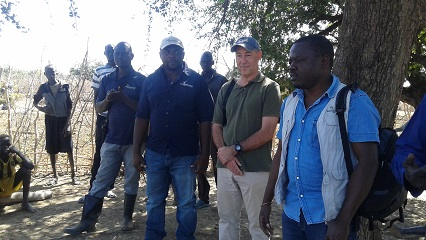
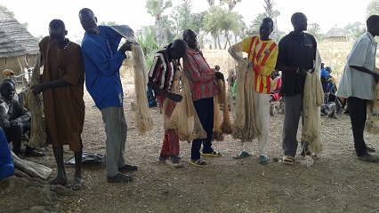
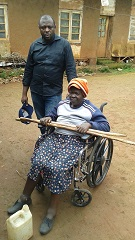
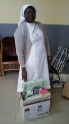

My Travels
I love traveling and so far I have traveled to the following continents and countries:
- Africa: Kenya, Uganda, Tanzania, Benin, South Sudan, Ethiopia 
- Europe: Denmark, Sweden, United Kingdom, Belgium
- North America: Canada

I love traveling and so far I have traveled to the following continents and countries:
I don't have much but I recognize the fact that I am better off than others. I stick to my foundational studies at Sunday School where we were taught that blessed are the hands that give than the ones that receive. I donate mostly used items which I either buy through garage sales in Canada or being donated by our family friends who own a junk company and we ship them to Cameroon and donate to both individuals in need and organizations to cater for the needs of the less privileged in Bamenda-Cameroon
